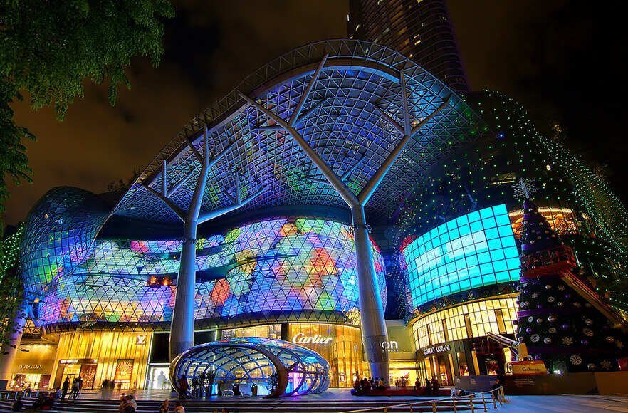
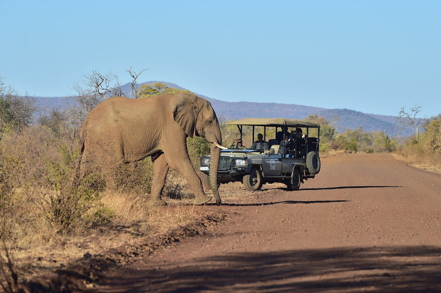

If one of your favorite pastimes is walking around malls and shopping, Singapore could be the perfect destination for your trip. You can get lost in the multiple story malls that stretched for miles and were at every corner of the city. Areas of the mall specifically for luxury and expensive brands and others for entertainment and more fun.

If you enjoy traveling to learn about the history of the countries you are in, France is your ultimate destination. Museums such as the Louvre display art from hundreds of years ago such as the Mona Lisa. Architecture in this country has been standing since the middle ages. Even if you aren't a history fanatic, you can still enjoy this old country.
